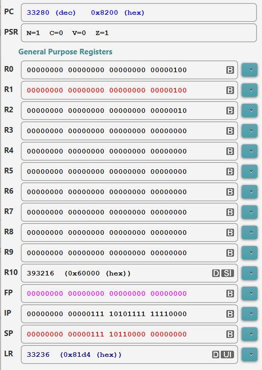
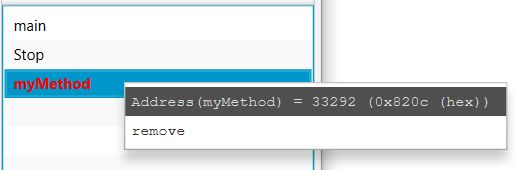
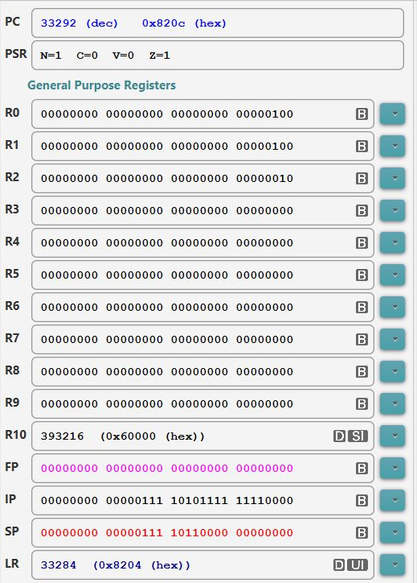

- Modern computer
typically
provides
2 assembler instructions
that user can use
to implement
methods:
- An assembler instruction that is used by the caller to invoke a method
- An assembler instruction that is used by the callee (= the called method) to return to its caller
- The branch and link
(bl
instruction in the
ARM processor is used
to
invoke (= call) a
method.
- Syntax of the
branch and link instruction:
bl label Effect: (1) Save the Program Counter (PC) in the Link Register (LR) (2) Branch to memory location marked by the label "label"Explanation:
- Recall that the
Program Counter (PC) contains
the address of the
next instruction that the
CPU will
fetch (and execute) after it processed
the current instruction in the
Instruction Register (IR)
In other words:
- PC contains the
location of the
instruction
following the
bl instruction:
Assembler program in memory: .... .... bl method <--- CPU currently executing the bl instruction next instr <--- The PC contains the address of this instruction ! ....
By saving the value in the PC (in the LR register), we have saved the return address that the invoked method must use to return back to its caller !!!
- PC contains the
location of the
instruction
following the
bl instruction:
- Recall that the
Program Counter (PC) contains
the address of the
next instruction that the
CPU will
fetch (and execute) after it processed
the current instruction in the
Instruction Register (IR)
- The retrurn address saved in the LR register is a "bread crump" - using the analogy of Hansel and Gretel....
- Consider the
following ARM assembler program:
main: mov r0, #4 mov r1, #4 bl myMethod mov r2, #4 mov r3, #4 myMethod: mov r10, #4 mov r9, #4I will use EGTAPI in class to show you the executing.
I have taken some snapshot of the execution for my notes.
The content of the registers at the moment the ARM processor executes the bl instruction is as follows:
 Notice that PC = 33280 which is the location of the "bl myMethod" instruction
The "bl myMethod" instruction will call (= run, jump) the myMethod function which is located at address 33292 as given by EGTAPI:
 When we click STEP and execute the "bl myMethod" in EGTAPI, we will see these values in the registers:
 Notice that:
- PC = 33292 - the program
made a jump to
the myMethod function
(So the instructions in the myMethod function will now be executed)
- Notice that
the LR register contains:
33284 !!!
- This is the address of the instruction that follows the "bl myMethod" instruction !!!
So the bl (branch and link) instruct has saved the return address in the lr register
- PC = 33292 - the program
made a jump to
the myMethod function
- The Return from Subroutine
in the ARM processor can be
achieved using a
mov instruction
mov pc, lr Effect: Copy the return address saved by the bl instruction into the Program Counter (PC)
Memory Instruction Address: in the memory address: --------- ----------------------- 2244: BSR label 2246: MOVE.L #0, Dummy1 4012: label: MOVE.L #0, Dummy2 4014: RTS |
PC = 4012 +---------------+
A7 = 9996 | |
+---------------+
| |
+---------------+
A7 --> 9996 | 2246 |
+---------------+
10000 | xxxxxxxx |
|
Suppose the CPU fetched "RTS" and executes it...
AFTER the CPU finishes executing "RTS", the stack will be changed to:
- NOTE: although the value 2246 is still in memory, it is NO LONGER part of the system stack - because the stack top (indicated by A7) has moved below that memory location !!!!
PC = 2246 +---------------+
A7 = 10000 | |
+---------------+
| |
+---------------+
9996 | 2246 | <- NOT part of the stack !
+---------------+
A7 -->10000 | xxxxxxxx |
|
Note that the value 2246 which was at the top of the stack is now in the PC !!!
-
In other words, the PC has been updated to 2246
(In computer science jargon: 2246 was POPPED from the program
stack into the PC.)
Note also that the value 2246 is the location AFTER the BSR instruction !!!
Becasue PC = 2246, the next instruction that the CPU will fetch and execute is the one after the BSR instruction !!
That is exactly the location where you want to be when you return from the called function !!!!
- While functions/methods look very "formidable" in high level
languages (such as Java), functions/methods written
in assembler does not look like much:
- A function in assembler code looks something like this:
FuncName: ...... ...... (assembler instructions that comprise ...... the body of the function) ...... RTS - Needless to say that this is a far-cry from the "nice-looking"
(human readable) block structures in a high level language.
- Furthermore, functions/methods written in assembler are very hard to discern - especially if you remember that there are many labels all over the place from IF and WHILE statements !!!
- Example Program:
(Demo above code)

- Prog file: click here
- Methods (or subroutines) in high level languages have very
nice syntax structures to highlight where the method
begins and ends...
Example:
public int myMethod ( int p1, int p2 ) { ... }You can see the method name and the curly braces { .. } that denote the start and the end of the method clearly
Methods (or subroutines) in assembler are nothing more than a series of instructions marked by a label
Example:
myMethod: ... ... (assembler instructions) ...It's very hard to tell in assembler program which label to mark a method start location !!!